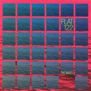

Home Artist links Label link

Flat122 - The Waves
| Artist: | Flat122 |
| Title: | The Waves |
| Label: | Musea/Poseidon FGBG 4608/PRF-027 |
| Length(s): | 64 minutes |
| Year(s) of release: | 2005 |
| Month of review: | [05/2006] |
Line up
Satoshi Hirata - guitar
Takao Kawasaki - piano, synths, sampling
Kiyotake Tanabe - drums, percussion
Akane Kobinata - vocals on 1,5,10
Tracks
| 1) | Movement From Silence Op. 1 | 1.26
|
| 2) | The Waves | 15.40
|
| 3) | Neo Classic Dance | 6.04
|
| 4) | Satie #1 | 3.52
|
| 5) | Movement From Silence Op. 2 |
|
| 6) | The Summer | 3.38
|
| 7) | PANORAMA | 3.18
|
| 8) | Dizziness | 5.45
|
| 9) | The Winter Song | 7.56
|
| 10) | Movement From Silence Op. 3 | 0.47
|
| 11) | Spiral | 13.48
|
Summary
The music
This Japanese act, unlike many of their stable mates at Poseidon, do not come up with a release fully within the jazzrock vein. The disc may have its jazzrocky moments, but it also has bits with an atmospheric or experimental basis. The music reminds me of Ain Soph to a degree, but steering away (more than a bit) from that band's seas of cheese. Of course by the playfulness found in some of the tracks Flat122 takes a big step in achieving this, but there's a quality to the more tranquil bits that is on the one hand akin, yet on the other hand different from the Soph. Having said that: I do not mean this review to be an Ain Soph bashing and Flat122 praising. The downside of playfulness, for instance, is that it can easily turn into neuroticism. And guess what?
The Movement From Silence tracks contain strange humming experiments, which vaguely remind of Philip Glass, but are to short (and strange, too, really) to fully create that effect. Apart from that: they are on the peaceful side to be Glass. They are interesting, though.
Aside from the voice experiments there are some guitaristic experiments with piano support. This stuff is pretty avant garde and borderline technical fiddly meandering, but the guys do put in some nice bits in this area. And yes, they do go over the edge on some of these bits, but a lot of it is nice, controlled. Dizziness is a good example of this kind of stuff, and probably the track on the disc I enjoyed most.
Conclusion
This album is a bit of a mixed bag. On the one hand that raises questions on the consistency of the album (but these are answered satisfyingly enough), on the other hand it prevents me from raising one of my main objections against albums in the jazzrock vein: their lack of variation. This one is a nice blend of friendly sections, jazzrock, voice experiment and hard experimental jazz with some rock. The result is pretty decent, maybe nothing earth shattering, but still interesting enough to be heard by those into the genre.
© Roberto Lambooy